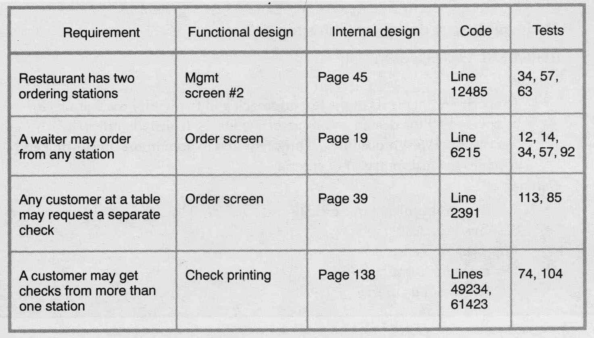
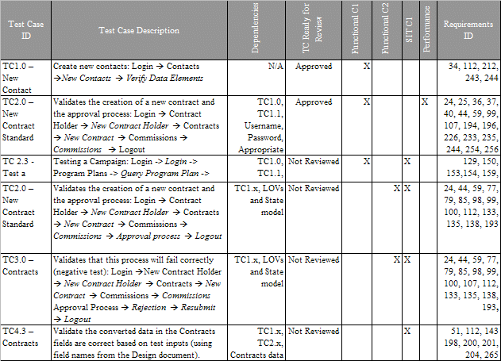
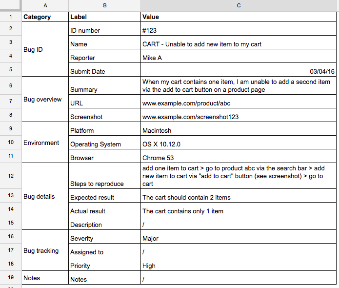

Software Testing
Author: Isaac Kuri
Summary
The following text will aim to inform the reader how a software is validated via various methods of testing throughtout various stages of the developer process. In our scope we will also cover types of testing, how to format and present the testing results.
Keywords: Software, Validation, Testing, Quality, Metrics.
Introduction
Around the industry there are many validation processes that make the products you acquire be a tool or a toy or in this case software, they have a consistent quality and functionality. How can engineers achieve such quality? The answer lays in their methods of testing and quality insurance.
The quality of a product is determined by the strictness of the requirements and how effective the tests are in measuring the requirement’s performance. If a testing method is not proper for the requirement then it may pass or be rejected when in reality it should not be the case.
Proper ways of testing should be determined by a well-informed team or with the advice of experts in such areas. It is important to know that as software has influence in most areas of humanities knowledge the developer team may encounter a problem out of their scope or worse not even notice it and carry it over the integrity of the project.
Keeping in mind these concepts and ideas I am ready to introduce you to the world of software testing which at first glance might seem like just looking at code all day but is like trying to break your own work, maybe by taking it to the limits or by doing just random things all of these while recording and evaluating the results.
Validation Techniques
Testing
Why should we test a program? We test a program because we want to demonstrate that it is doing what its supposed to do. Testing usually implies the use of artificial data that checks to help identify errors, anomalies or vulnerabilities of the program.
Software testing has two distinct goals. First is to prove to the developer and the customer that the software meets its requirements. Second to discover contexts in which the software misbehaves or doesn’t meet the declared requirements.
Testing is done throughout many stages of the life cycle of a software and goes beyond deployment:
Development testing
During this stage the program is being developed and most of the testing here will involve on the march test because each function, class and UI is being created from scratch or based on a model. Software testing can be structured in a base-to-top three parting from single units to the whole system. Let’s have a brief taste of each branch:
Unit testing
This stage is the base for all the incoming tests, during this stage the program’s individual units are tested. Each individual must reach a goal, for that it is important to make sequences to get to those goals. For example: Testing a Pythagorean function
def Pythagorean(a,b) {
c = (a**2 + b**2)**(1/2)
return c
}
As the programmer you are expecting this function to return the hypotenuse of a triangle, a test sequence can be as simple as: call Pythagorean() then input a = sqrt(-2), b= 1, then record output. In this occasion the Pythagorean function would return an error because we would introduce imaginary numbers to the function which is out of the scope of the functions purpose. These also helps to set de boundaries of the function (an interval of valid values).
Component testing
Then we have component testing which just implies that each individual unit should be tested in a synchronous manner. For example calling back to the Pythagorean function we can use it on a simple html interface with a button and two textbox-inputs. A component test would be to write a number in each input, and then call the Pythagorean function, click the button, and see what happens.
System testing
Lastly, we have system testing which implies that some or all the components in the system are integrated and tested as a whole. For example, in our Pythagorean page lets suppose that we uploaded it to a server and now has a domain. A system test would include our last component test with some addition las steps like inputting the domain to a browser, doing the component test, checking that the server receives the information, closing the page.
Release Testing
When doing release testing the aim is for a tester team to test a complete version of the program and confirm that the whole system is working as intended and meets the requirements. For example: A videogame closed beta, which is used by developer teams to test and showcase future releases of games.
User Testing
And the last phase is the user testing this is when the developer team has a product for the users or potentials user to test the program in their own environment like his own pc, cellphone, etc. An example is the open beta phase of a game when is released to the public for feedback.
Software Quality Testing
There are many things to test, as so many ways have been developed for software testing:
Functionality
When testing functionality, it is important to do a test-driven development. According to Software Engineering by Somerville, the steps are the following:
First, star by identifying the increment functionality that is required. This step refers to find the problem and apply your solution.
Second, write a test for the subjected functionality and implement an automated test. For example, test for expected values and have a way to determine if it failed or not.
Third, run the test along with all other test that have been implemented. This is so you can prove that the applied solution is taking effect on the whole process because the system should fail without it.
Fourth, implement the functionality and re-run the test.
Fifth, once all tests run successfully, move on to implementing the next chunk of functionality.
Integration
This is a systematic technique for constructing the software architecture, it is used to uncover errors associated with interfacing. As it is being tested while being constructed. With the objective of applying unit-tested components to the program.
There are two approach to integration:
Top-down which starts the program from one component and divides into many other branches, in a three model. And the bottom-up which parts from many components until it reaches only one individual which has a relationship with all the other components.
Penetration
Penetration it’s a way to check for the security of the program, trying to get into the program without implicit permission. For example: Entering a database without permission, via hacking or code injection.
White & Black box
The black and white box methods have a big contrast with each other hence the names.
Lets first start with the White-box testing method, the main idea behind the white-box is to test for every scenario in the code. This implies that each functionality has been tested at least once, all ifs have been checked, all the boundaries have been checked, data structures, etc. This is usually done by the developers during the development testing.
Then we have the Black-box testing method, this method focuses on all the external factors of the program like incorrect or missing functions, interface errors and glitches, errors in data structures, performance, booting and closing errors, etc. This method gets apart from the internal approach of the white-box and looks for external factors that can affect the system.
Smoke & Monkey testing
Smoke testing to test the system on certain boundaries of load, this kind of test usually reflects the limits of the language that the program is being coded on and the limitations of the hardware. For example, when performing an overclock to a personal computer as a stress-test we use programs like Prime95 to check CPU stability.
And finally monkey testing, this usually refers to test for random or unlikely actions. Like throwing a punch to a screen, or inputting trash-values to a program.
Quality Metrics
Quality Metrics are the results of the testing process and they are recorded on a document called Test planning. The format of this document can differ between software projects but, it must include the following elements: Requirements matrix, program code, applied purification methodology report, test cases and error analysis.
Requirement matrix
It’s a table used to list the requirement, requirement type, description, etc.

Test cases
It’s a list of the test cases that will be implemented on the test process.

Error analysis documents
It’s a report of field test includes: description of the tests, statistical reports, photographic evidence, event log, validation and quality standards used, and analysis of the test results.

Conclusion
One of the most challenging steps of making a product is the testing stage as it determines the quality and viability of the whole project. It can be rough as a developer to be notice that the project had an unexpected problem and it had to be delayed or pulled out of production because of poor quality testing. Choosing the right metrics to test, the right method can help prevent this kind of problems.
But as Murphy's law states "If something can go wrong it will go wrong".
One good example of poor-quality testing is the Samsung Galaxy 7, it had a battery that exploded randomly it harmed many people because it burned in their pockets. Which made Samsung start a campaign to recover the phones and refunding the money to the owners.
I think that when a testing stage its well performed and receives constructive criticism from the users it grows and evolves into a richer end product like can be appreciated in videogames that go through an open beta stage or that always have an off the rails version to test like the Public Beta Environment of League of Legends that prevents many bugs and game balance issues from getting into the live version of the game.
In the case of physical systems like cellphones and other handheld devices, user feedback has to come after the first revision as its usual for a hardware product. It’s a risky market as if your first iteration doesn’t make an impact you might end up losing all your market, but the second revision has the most potential as it will receive all the necessary feedback to analyze and recognize what people want from your product and it’s a chance to build upon the reputation of the company.
Finally, I think that testing it’s the most important stage of a development cycle next to identifying the problem, because it’s when the solutions really come to light and the program starts to structure itself to be of use to the end user.
Bibliography
https://hubtechinsider.files.wordpress.com/2011/07/requirements_matrix2.jpg
https://docs.oracle.com/cd/E74890_01/books/TestGuide/TestGuide_PlanTesting5.html
https://marker.io/blog/bug-report-template/
Software Engineering By Somerville, 9th edition.